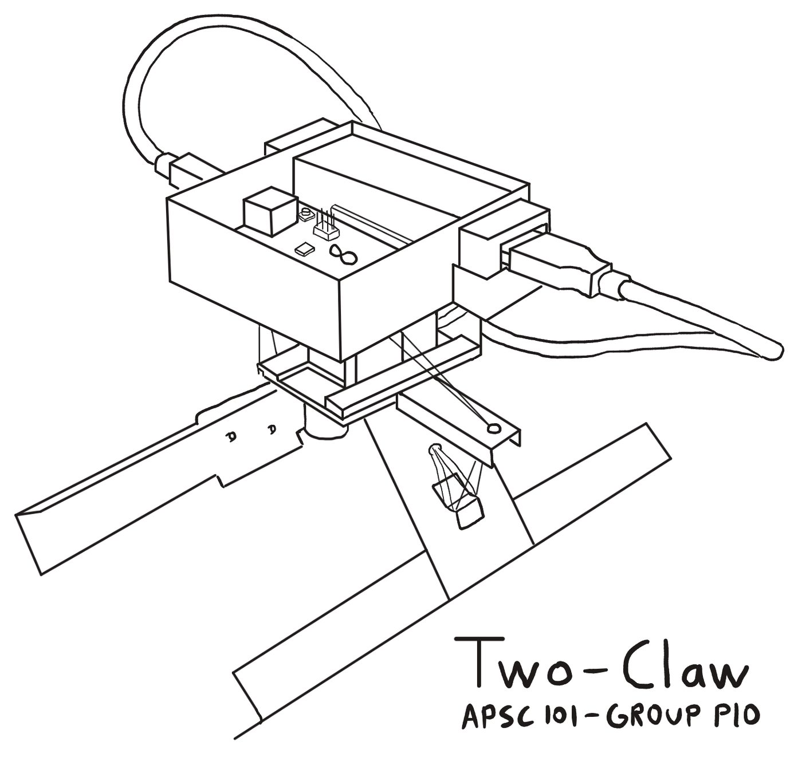
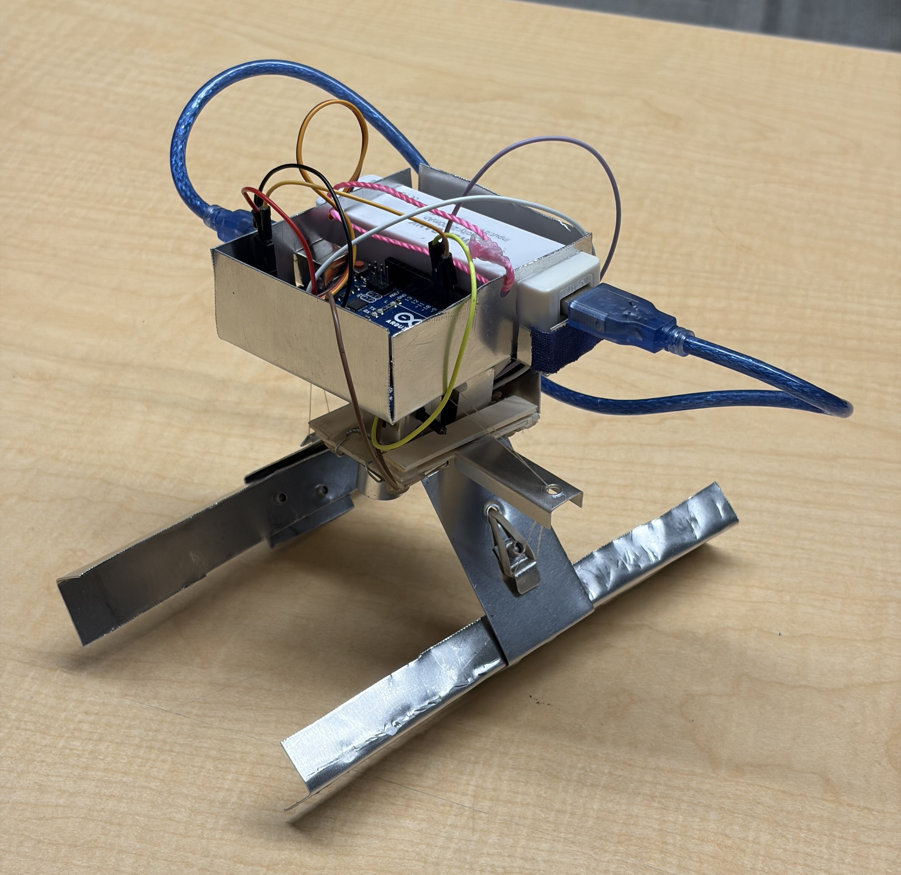

The challenge:
Design, assemble, and program a claw robot that can
autonomously pick up blocks.
The approach. I built the claw around an Arduino Uno, using two ski-style claw arms engineering specifically for the 1-inch blocks used in competition. The arms were actuated by a servo motor and fishing line, with a lightweight housing constructed from sheet aluminium, popsicle sticks, and hot glue. A HC-SR04 sonar was used to detect the ground, with a debouncing algorithm to prevent false positives.
Arduino
C/C++
Mechanical Design